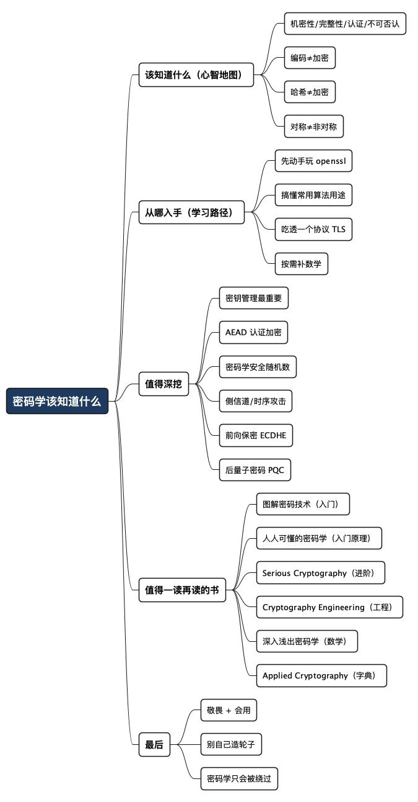

关于密码学，我们到底该知道些什么
Posted on 二 07 7月 2026 in Journal
| Abstract | 关于密码学，我们到底该知道些什么 |
|---|---|
| Authors | Walter Fan |
| Category | learning note |
| Version | v1.0 |
| Updated | 2026-07-07 |
| License | CC-BY-NC-ND 4.0 |
关于密码学，我们到底该知道些什么
有一次遇到一个 client 验证服务器证书失败的问题，我研究了半天，先用 tcpdump 抓包，再拿 Wireshark 一点点分析，最后才搞清楚：是中间那台 HTTPS 代理换掉了证书，而它的 CA 证书没进客户端的信任链，验证自然过不去。事后同事问我：这证书验证到底是怎么个流程？我张口想讲，发现自己只能说个大概："客户端拿服务器证书，用 CA 公钥验一下签名……" 再往下问细节，就有点心虚了。
后来把它彻底想明白了，其实客户端验证服务器证书就干这么几件事：
- 握手时拿到证书链。 TLS 握手中，服务器会把自己的证书连同中间 CA 证书一起发过来，形成一条"服务器证书 → 中间 CA → 根 CA"的链。
- 逐级验签。 客户端从服务器证书往上走：用中间 CA 的公钥验服务器证书上的签名，再用根 CA 的公钥验中间 CA 的签名。每一层的签名都是上一级 CA 用私钥签的，公钥验得过，才说明这张证书确实是它签发的、没被篡改（这一步靠的就是数字签名）。
- 信任锚落地。 链的最顶端那个根 CA，必须已经躺在客户端的信任库里（操作系统或浏览器预置的一批根证书）。验到根、而这个根又被信任，整条链才算可信。
- 再查有效性。 域名对不对得上（证书里的 SAN/CN 要匹配你访问的主机名）、有没有过期、有没有被吊销（CRL/OCSP）。
我那次栽的坑就在第 3 步：HTTPS 代理做的是中间人，它把真实服务器证书拆掉，用自己的 CA 重新签了一张证书发给客户端。签名本身没问题，但这个代理 CA 的根证书没被装进客户端的信任库，信任链断在了顶端，于是报"证书验证失败"。抓包能看到握手，Wireshark 里能看到那张陌生的证书，但只有把这套验证流程在脑子里跑一遍，才知道该去查"根有没有被信任"这一环——把代理的 CA 证书导入信任库，问题立刻就好了。
这大概是很多程序员和密码学的关系：天天在用，很少真懂。 我们用 HTTPS、用 JWT、用 bcrypt 存密码、往配置里塞 AES 密钥，可要问一句"你为什么这么用、这么用安全吗"，很多人是答不上来的。
密码学这东西，门槛看着高，其实是被数学吓的。这篇不讲公式推导，我想按四条线给你一张地图：该知道什么、从哪入手、哪些值得深挖、哪些书值得反复读。 看完你不会成为密码学家，但至少不会再对着一堆算法名字发懵，也不会写出"自己发明加密算法"这种要命的代码。
- 先说结论：普通开发者的目标不是"造轮子"，而是"会正确地用轮子、看得懂轮子"。
- 密码学 90% 的坑，不在算法本身，而在"用错场景、用错姿势"。
一、该知道什么：先建立一张"心智地图"
学任何东西，最怕一上来就钻细节。密码学尤其如此——不先搭骨架，你会淹死在 AES、RSA、ECDSA、HMAC、PBKDF2 这一大堆缩写里。
我的建议是先记住这张"四件事"的地图。所有密码学工具，本质上都在解决下面四个问题里的一个：
| 你想保证什么 | 大白话 | 常见工具 |
|---|---|---|
| 机密性（Confidentiality） | 别人看不到内容 | 对称加密 AES、非对称加密 RSA/ECC |
| 完整性（Integrity） | 内容没被偷偷改过 | 哈希 SHA-256、消息认证码 HMAC |
| 认证（Authentication） | 你确实是你 | 数字签名、证书、MAC |
| 不可否认（Non-repudiation） | 你不能事后抵赖 | 数字签名 |
密码学不是"加密"这一件事，而是"机密、完整、认证、不可否认"四件事。 一上来就只盯着"怎么加密"，你会漏掉一半的世界。
举个生活里的例子：你给朋友寄一个上锁的箱子。加密是"只有他有钥匙能打开"（机密性）；哈希/MAC是"箱子上贴了封条，被撬过一眼就看得出"（完整性）；签名是"箱子上有你的亲笔签名，证明确实是你寄的、你赖不掉"（认证 + 不可否认）。四件事，缺一个都可能出事。
还有几个必须先分清的概念，分不清后面全是糊涂账：
- 编码 ≠ 加密。 Base64 是编码，谁都能解，不提供任何安全性。把密码 Base64 一下就存库，等于没锁门。
- 哈希 ≠ 加密。 哈希是单向的，算过去回不来；加密是双向的，有钥匙能还原。存密码要用哈希，传数据才用加密。
- 对称 ≠ 非对称。 对称加密快，一把钥匙加解密都用（AES）；非对称慢，公钥私钥一对（RSA/ECC）。真实系统几乎都是"非对称协商密钥 + 对称加密数据"的组合拳，因为非对称太慢，扛不住大流量。
把这几组概念分清楚，你就已经超过一大半"会用但说不清"的开发者了。
二、从哪入手：一条对程序员友好的路径
密码学的学习资料，要么太数学（一上来就是群、环、域），要么太浅（教你调个库就完事）。对多数工程师，我推荐从"用"倒推到"懂"，而不是从数学正推。
我自己复盘下来，比较顺的路径是这样四步：
- 先玩起来，别先啃理论。
打开命令行，用
openssl亲手做一遍。生成一对密钥、做一次加密解密、算一个哈希、签一个名再验一次。手上有了感觉，再看理论就不空了。比如：
```bash # 算一个 SHA-256 哈希 echo -n "hello" | openssl dgst -sha256
# 生成一对 RSA 密钥 openssl genrsa -out private.pem 2048 openssl rsa -in private.pem -pubout -out public.pem
# 用公钥加密，用私钥解密 echo -n "secret" | openssl pkeyutl -encrypt -pubin -inkey public.pem -out cipher.bin openssl pkeyutl -decrypt -inkey private.pem -in cipher.bin ```
提示：
openssl是密码学世界的瑞士军刀。你能用它把一个概念"跑"出来，就说明你真懂了那个概念的输入输出，而不是只记住了名字。
- 搞懂几个"最常用"的算法在解决什么问题。 不用一个个啃，先把下面这份"够用清单"过一遍，知道每个是干嘛的、用在哪、别用错：
| 场景 | 现在该用 | 别再用（已过时/不安全） |
|---|---|---|
| 对称加密 | AES-256-GCM（带认证） | DES、3DES、AES-ECB 模式 |
| 非对称加密/签名 | ECDSA / Ed25519 / RSA-2048+ | RSA-1024 |
| 哈希 | SHA-256 / SHA-3 | MD5、SHA-1 |
| 存密码 | bcrypt / scrypt / Argon2 | 明文、单纯 MD5/SHA |
| 密钥交换 | ECDHE（前向保密） | 静态 RSA 密钥交换 |
这张表你能默出来，日常 90% 的选型就不会翻车。
-
把一个真实协议吃透，比如 TLS。 TLS 是密码学的"集大成者"：密钥交换、证书、签名、对称加密、完整性校验，一个握手全用上了。你把 TLS 1.3 的握手流程搞懂，等于把前面所有零件在真实场景里串了一遍。抓个包（Wireshark）看一次真实握手，比看十遍图都管用。
-
最后再补数学，而且是"按需补"。 等你对"为什么 RSA 能加密""为什么椭圆曲线更省"产生真正的好奇，再去补模运算、有限域、离散对数。这时候数学是来解答你的疑问的，而不是来劝退你的。顺序反了，90% 的人会死在第一章。
一句话概括这条路径：
先动手，再懂用途，再吃透一个协议，最后按需补数学。 反过来从数学学起，是给密码学专业的学生准备的，不是给要交活儿的工程师准备的。
三、哪些值得深挖：踩过坑才知道的重点
会用之后，如果你想再往深走一层——尤其是做安全、做基础设施、做 SDK 的同学——下面几块是真正拉开差距、也真正容易出事的地方。这些不是教科书的重点，而是我踩过或见人踩过的坑。
-
密钥管理，比算法本身重要一百倍。 这是我最想强调的一点。算法基本没人能攻破，但密钥被硬编码进代码、提交进 Git、打进日志、塞进前端——这种事天天发生。学会用 KMS、Vault、CSMS 这类密钥管理服务，理解密钥轮转、密钥分级、"最小暴露"，比你会推导 AES 有用得多。一句老话：密码学不会被破解，只会被绕过。
-
认证加密（AEAD）：别再"先加密再单独校验"。 很多老代码用 AES-CBC 加密，再用 HMAC 单独校验完整性，顺序稍微搞错就出漏洞（比如 padding oracle 攻击）。现在直接用 AES-GCM、ChaCha20-Poly1305 这类"加密+完整性一步到位"的 AEAD 模式，把两件事绑死，少一个自己拼装的机会就少一个坑。
-
随机数：加密的地基。 密码学的安全性，很大程度建立在"随机数真的随机"上。用
Math.random()、用固定种子、用可预测的 IV/nonce，都是把大门敞开。一定要用密码学安全的随机数源（/dev/urandom、crypto.randomBytes、SecureRandom）。这地基一塌，上面盖多结实的算法都白搭。 -
侧信道攻击（Side-channel）：算法对，实现错。 这个我专门写过一篇 什么是时序攻击。同样一段验证逻辑，用普通的字符串比较，攻击者可以通过"比较花了多久"一点点猜出正确的密钥——这就是时序攻击（timing attack）。所以密码相关的比较要用"恒定时间比较"（constant-time compare）。这类坑说明：密码学的安全，不只在数学里，也在你 CPU 执行的每一个时钟周期里。
-
前向保密（Forward Secrecy）：今天的密钥，护不住昨天的数据。 如果用静态密钥，一旦私钥泄露，攻击者能解开他之前录下的所有流量。用 ECDHE 这类每次会话临时协商密钥的方案，就算私钥哪天丢了，历史数据也还是安全的。做长期服务的，这个必须理解。
-
面向未来：后量子密码（PQC）。 量子计算机一旦成熟，现在的 RSA、ECC 会被 Shor 算法一锅端。2024 年 8 月，NIST 正式发布了首批三个后量子加密标准：FIPS 203（ML-KEM，密钥封装，源自 CRYSTALS-Kyber）、FIPS 204（ML-DSA，数字签名，源自 CRYSTALS-Dilithium）、FIPS 205（SLH-DSA，基于哈希的签名，源自 SPHINCS+）。2025 年又补选了 HQC 作为 ML-KEM 的备份方案。这块现在不用马上上手，但要知道它在发生，别几年后被时代甩下车。
四、哪些书值得一读再读
密码学的书很多，坑也很多——不少书要么把你劝退，要么把你教歪。下面这几本是公认靠谱、也适合不同阶段的，我按"从入门到深挖"排个序。
-
《图解密码技术》（結城浩）——入门首选，闭眼推荐。 日本作者写的，最大的优点是"人话"。对称、非对称、哈希、签名、证书、随机数、SSL/TLS，讲得又清楚又不吓人。如果你只打算读一本，就读它。反复读三遍，密码学的骨架就立住了。
-
《人人可懂的密码学》（基思·M. 马丁，Keith M. Martin）——只想"懂"不想啃数学的人首选。 作者是伦敦大学皇家霍洛威学院的信息安全教授。这本书最贴合本文开头那个问题——它讲的是"密码学在现实里到底怎么用"，从互联网、手机、Wi-Fi、银行卡讲到区块链，重点放在核心原理和密钥管理，而不是公式推导。原书英文名叫 Everyday Cryptography，有高中数学基础就能读，特别适合"想搞懂却怕数学"的开发者。注意书名是"人人可懂"，别记成"人人都懂"。
-
《Serious Cryptography》（Jean-Philippe Aumasson）——进阶实战，工程师味最正。 由真正的密码学家写给工程师看的。既讲原理，也讲"现实里怎么用、怎么用错"，AEAD、随机数、TLS、后量子都覆盖。它不堆公式，但会把"为什么这么设计"讲透。第二版还加了后量子的内容。
-
《Cryptography Engineering》（Ferguson、Schneier、Kohno）——工程视角，教你别自己造轮子。 这本的态度我很认同：不要自己实现密码学。 它花大量篇幅讲真实系统里怎么把密码学组件正确地拼起来、怎么做密钥管理、怎么避免常见工程错误。做系统设计的必读。
-
《深入浅出密码学：常用加密技术原理与应用》（Christof Paar & Jan Pelzl）——想补数学时的良师。 它就是经典教材 Understanding Cryptography 的中文版（清华大学出版社，马小婷 译）。如果你走到了"想真正理解数学原理"那一步，这本是很好的桥梁：从模运算、有限域讲起，循序渐进，每章还配了习题，作者 Paar 教授的配套公开课视频也很出名。适合下决心深挖的人。
-
《应用密码学 / Applied Cryptography》（Bruce Schneier）——经典，但当"字典"用。 密码学的经典大部头，覆盖面极广。但它偏老、偏理论，不建议从头读，适合当参考手册：遇到某个算法或协议，翻它对应章节。
读书顺序建议：
图解密码技术或人人可懂的密码学打底 →Serious Cryptography上手 →Cryptography Engineering学工程 → 想懂数学上深入浅出密码学→ 需要时用Applied Cryptography查漏。
最后一句
密码学对绝大多数工程师来说，不需要"精通"，但需要"敬畏 + 会用"。敬畏，是知道自己别去发明算法、别去改魔改实现；会用，是知道在什么场景挑什么工具、怎么管好密钥、怎么不在实现细节上翻车。
回到开头那个 DTLS 握手的问题——后来我认认真真把 TLS 握手过了一遍，再抓包对照，那些缩写才第一次变成了活的流程。很多知识就是这样：你以为难，是因为你还没亲手跑通它一次。
密码学不会被破解，只会被绕过。而绕过它的，往往不是天才黑客，是我们自己写下的一行图省事的代码。
全文思维导图
@startmindmap
<style>
mindmapDiagram {
node {
BackgroundColor #F8F9FA
RoundCorner 10
Padding 10
FontSize 13
}
:depth(0) {
BackgroundColor #1E3A5F
FontColor white
FontSize 18
FontStyle bold
}
:depth(1) {
FontSize 15
FontStyle bold
}
:depth(2) {
FontSize 13
}
}
</style>
* 密码学该知道什么
** 该知道什么（心智地图）
*** 机密性/完整性/认证/不可否认
*** 编码≠加密
*** 哈希≠加密
*** 对称≠非对称
** 从哪入手（学习路径）
*** 先动手玩 openssl
*** 搞懂常用算法用途
*** 吃透一个协议 TLS
*** 按需补数学
** 值得深挖
*** 密钥管理最重要
*** AEAD 认证加密
*** 密码学安全随机数
*** 侧信道/时序攻击
*** 前向保密 ECDHE
*** 后量子密码 PQC
** 值得一读再读的书
*** 图解密码技术（入门）
*** 人人可懂的密码学（入门原理）
*** Serious Cryptography（进阶）
*** Cryptography Engineering（工程）
*** 深入浅出密码学（数学）
*** Applied Cryptography（字典）
** 最后
*** 敬畏 + 会用
*** 别自己造轮子
*** 密码学只会被绕过
@endmindmap

本作品采用知识共享署名-非商业性使用-禁止演绎 4.0 国际许可协议进行许可。 欢迎在我的个人网站 https://www.fanyamin.com 访问原文并评论。